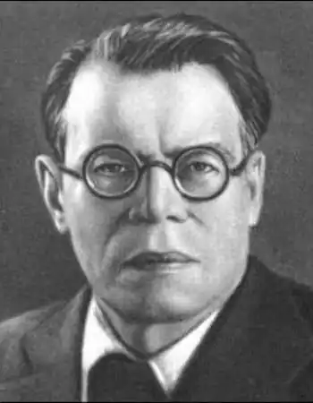
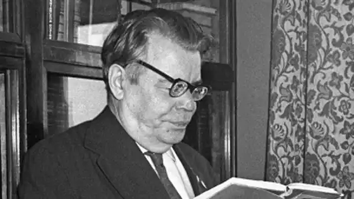

Михайло Васильович Ісаковський (1900-1973) — російський радянський поет. Лауреат двох Сталінських премій першого ступеня (1943, 1949). Герой Соціалістичної Праці (1970). Член РКП(б) з 1918 року .
Народився 19 січня 1900 року в селі Глотівка Ельнинского повіту Смоленської губернії в бідній селянській родині. Місцевий священик навчив Ісаковського читати і писати. Пізніше Ісаковський провчився 2 роки в гімназії. Перший вірш "Прохання солдата" Ісаковський опублікував ще в 1914 році в московській газеті "Новь". З тих пір він видав величезна кількість віршованих збірок. У 1921 р. в Смоленську вийшли три невеликі книжки віршів Ісаковського.
Початком своєї літературної діяльності поет вважав 1924 року, коли були надруковані вірші "Підпасичі", "Рідне" та ін В 1927 р. в Москві вийшла книга "Проводи в соломі", потім з'явилися збірники "Провінція" (1930), "Майстри землі" (1931), "Чотири бажання" (1936) та інші. Велике місце в творчості Ісаковського займають вірші про Велику Вітчизняну війну. Багато вірші Ісаковського, покладені на музику, стали популярними народними піснями, вони співаються у всьому світі: "Катюша", "І хто його знає", "У прифронтовому лісі", "Вогник", "Ой, тумани мої...", "Вороги спалили рідну хату", "Знову завмерло все до світанку", "Летять перелітні птахи" та ін. Відомі переклади Ісаковського з білоруських і українських поетів, угорських народних балад і пісень. Талант Ісаковського високо цінував сам Горький. Крім поезії, Ісаковський писав і теоретичні роботи про літературу. Одна з найуспішніших її книг "Про поетичну майстерність" містить листи до молодих стихотворцам, в яких поет радить писати чистим, ясним, народною мовою. Займався Ісаковський і літературними перекладами з українського, білоруського та угорської мов. А на схилі років Михайло Васильович написав книгу "На Ельнинской землі: Автобіографічні сторінки". Михайло Васильович Ісаковський помер 20 липня 1973 року в Москві, похований на Новодівичому кладовищі.